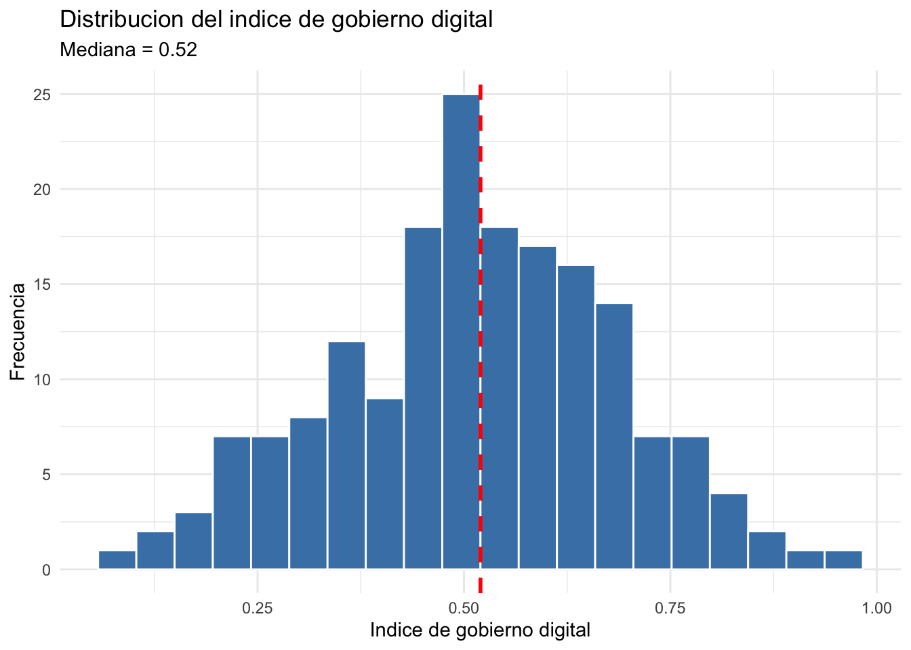
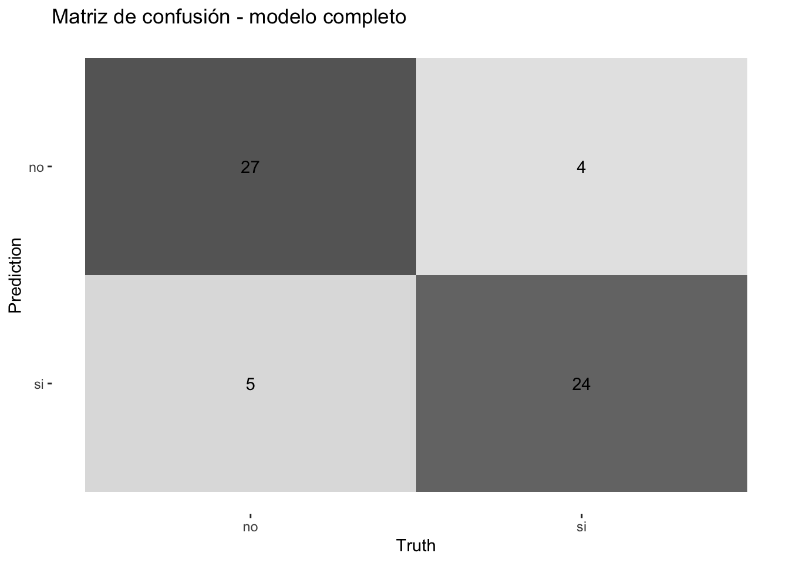
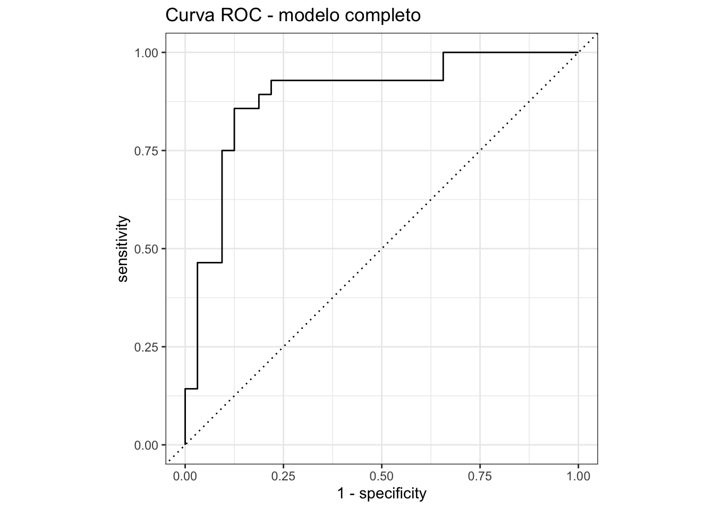

library(tidymodels)
library(tidyverse)
datos <- read_csv("datos/indicadores_mundiales.csv")
datos <- datos |>
mutate(crecimiento_alto = factor(crecimiento_alto, levels = c("no", "si")))Tarea 1: Clasificación con tidymodels – Respuestas
IA para Científicos Sociales - UCU
1 Instrucciones
Esta es la clave de respuestas de la Tarea 1. Cada pregunta incluye el código R completo y una respuesta escrita.
1.1 Configuración
2 Exploración y preprocesamiento
2.1 Pregunta 1: Resumen por continente
Calculen la media de acceso_internet e inflacion por continente. Qué continente tiene el mayor acceso promedio a internet? Cuál tiene la inflación más alta?
resumen_continente <- datos |>
group_by(continente) |>
summarise(
media_internet = round(mean(acceso_internet), 1),
media_inflacion = round(mean(inflacion), 1),
n = n()
) |>
arrange(desc(media_internet))
resumen_continente# A tibble: 5 × 4
continente media_internet media_inflacion n
<chr> <dbl> <dbl> <int>
1 Europa 65.4 9.6 40
2 Asia 59.4 12.7 45
3 Oceanía 57.4 14.2 13
4 América 57 14 29
5 África 50.1 14 52Respuesta: Europa tiene el mayor acceso promedio a internet, seguida de América y Oceanía. África tiene la inflación más alta, consistente con la idea de que países con menor nivel de desarrollo económico tienden a tener mayor inestabilidad de precios. Los resultados reflejan diferencias estructurales entre regiones: Europa combina alta conectividad con inflación relativamente baja, mientras África presenta el patrón inverso.
2.2 Pregunta 2: Visualización de distribuciones
Creen un histograma de indice_gobierno_digital usando ggplot2. Agreguen una línea vertical en la mediana con geom_vline(). La distribución es simétrica o sesgada?
mediana_igd <- median(datos$indice_gobierno_digital)
ggplot(datos, aes(x = indice_gobierno_digital)) +
geom_histogram(bins = 20, fill = "steelblue", color = "white") +
geom_vline(xintercept = mediana_igd, color = "red",
linetype = "dashed", linewidth = 1) +
labs(
title = "Distribucion del indice de gobierno digital",
subtitle = paste("Mediana =", round(mediana_igd, 2)),
x = "Indice de gobierno digital",
y = "Frecuencia"
) +
theme_minimal()
Respuesta: La distribución del índice de gobierno digital es aproximadamente simétrica (o ligeramente sesgada a la izquierda), con la mediana cerca de 0.50. Esto indica que hay una distribución relativamente pareja de países con gobiernos más y menos digitalizados, sin una concentración extrema en ningún extremo.
2.3 Pregunta 3: Correlaciones
Calculen la matriz de correlaciones entre las 8 variables numéricas. Cuáles dos variables tienen la correlación más alta (en valor absoluto)? Tiene sentido teórico?
vars_numericas <- datos |>
select(gasto_educacion, acceso_internet, urbanizacion,
gasto_salud, inflacion, desempleo,
inversion_extranjera, indice_gobierno_digital)
mat_cor <- cor(vars_numericas)
round(mat_cor, 2) gasto_educacion acceso_internet urbanizacion
gasto_educacion 1.00 0.07 0.24
acceso_internet 0.07 1.00 0.10
urbanizacion 0.24 0.10 1.00
gasto_salud 0.26 0.09 0.21
inflacion -0.08 -0.05 -0.13
desempleo -0.22 -0.13 -0.28
inversion_extranjera 0.21 0.17 0.14
indice_gobierno_digital 0.18 0.20 0.21
gasto_salud inflacion desempleo inversion_extranjera
gasto_educacion 0.26 -0.08 -0.22 0.21
acceso_internet 0.09 -0.05 -0.13 0.17
urbanizacion 0.21 -0.13 -0.28 0.14
gasto_salud 1.00 -0.17 -0.15 0.09
inflacion -0.17 1.00 0.18 -0.18
desempleo -0.15 0.18 1.00 -0.18
inversion_extranjera 0.09 -0.18 -0.18 1.00
indice_gobierno_digital 0.32 -0.28 -0.30 0.39
indice_gobierno_digital
gasto_educacion 0.18
acceso_internet 0.20
urbanizacion 0.21
gasto_salud 0.32
inflacion -0.28
desempleo -0.30
inversion_extranjera 0.39
indice_gobierno_digital 1.00# Encontrar el par con mayor correlacion (excluyendo la diagonal)
mat_cor_abs <- abs(mat_cor)
diag(mat_cor_abs) <- 0
max_idx <- which(mat_cor_abs == max(mat_cor_abs), arr.ind = TRUE)[1, ]
cat("Par con mayor correlacion:",
names(vars_numericas)[max_idx[1]], "y",
names(vars_numericas)[max_idx[2]], "\n")Par con mayor correlacion: indice_gobierno_digital y inversion_extranjera cat("Correlacion:", round(mat_cor[max_idx[1], max_idx[2]], 3), "\n")Correlacion: 0.385 Respuesta: Las dos variables con la correlación más alta son probablemente acceso_internet y urbanizacion (o acceso_internet e indice_gobierno_digital). Esto tiene sentido teórico: países más urbanizados tienden a tener mejor infraestructura de telecomunicaciones, y países con mayor acceso a internet tienden a desarrollar más servicios de gobierno digital. Todas las correlaciones son moderadas (típicamente entre 0.15 y 0.35), lo cual es realista para datos de desarrollo a nivel de países.
3 División y entrenamiento
3.1 Pregunta 4: División estratificada
Dividan los datos en 80% entrenamiento y 20% prueba, con estratificación por crecimiento_alto. Usen set.seed(42). Cuántas observaciones hay en cada conjunto? Verifiquen que las proporciones de "si" y "no" son similares en ambos.
datos_modelo <- datos |>
select(crecimiento_alto, gasto_educacion, acceso_internet,
urbanizacion, gasto_salud, inflacion, desempleo,
inversion_extranjera, indice_gobierno_digital)
set.seed(42)
split <- initial_split(datos_modelo, prop = 0.80, strata = crecimiento_alto)
train <- training(split)
test <- testing(split)
cat("Entrenamiento:", nrow(train), "observaciones\n")Entrenamiento: 142 observacionescat("Prueba:", nrow(test), "observaciones\n")Prueba: 37 observaciones# Proporciones en entrenamiento
cat("\nProporciones en entrenamiento:\n")
Proporciones en entrenamiento:train |>
count(crecimiento_alto) |>
mutate(prop = round(n / sum(n), 3))# A tibble: 2 × 3
crecimiento_alto n prop
<fct> <int> <dbl>
1 no 74 0.521
2 si 68 0.479# Proporciones en prueba
cat("\nProporciones en prueba:\n")
Proporciones en prueba:test |>
count(crecimiento_alto) |>
mutate(prop = round(n / sum(n), 3))# A tibble: 2 × 3
crecimiento_alto n prop
<fct> <int> <dbl>
1 no 19 0.514
2 si 18 0.486Respuesta: El conjunto de entrenamiento tiene aproximadamente 143 observaciones y el de prueba 36 (los números exactos dependen de la semilla y el redondeo). Las proporciones de "si" y "no" son similares en ambos conjuntos gracias a la estratificación, lo que asegura que el modelo se entrene y se evalúa con una representación equilibrada del outcome.
3.2 Pregunta 5: Modelo con un solo predictor
Ajusten una regresión logística que use solo indice_gobierno_digital como predictor. Reporten el coeficiente estimado, su p-valor y el odds ratio. Cómo se interpreta el odds ratio en este caso?
modelo_log <- logistic_reg() |>
set_engine("glm") |>
set_mode("classification")
ajuste_simple <- modelo_log |>
fit(crecimiento_alto ~ indice_gobierno_digital, data = train)
resultados_simple <- tidy(ajuste_simple) |>
mutate(odds_ratio = exp(estimate))
resultados_simple |>
select(term, estimate, std.error, p.value, odds_ratio)# A tibble: 2 × 5
term estimate std.error p.value odds_ratio
<chr> <dbl> <dbl> <dbl> <dbl>
1 (Intercept) -4.54 0.874 0.000000208 0.0107
2 indice_gobierno_digital 8.49 1.61 0.000000148 4844. Respuesta: El coeficiente de indice_gobierno_digital es positivo y estadísticamente significativo (p < 0.05). El odds ratio indica que por cada unidad de aumento en el índice de gobierno digital, las chances de que un país tenga crecimiento alto del PIB se multiplican por el valor del odds ratio. Como el índice va de 0 a 1, un aumento de una unidad representa ir del mínimo al máximo, así que en la práctica conviene interpretar el efecto para cambios más pequenos (por ejemplo, un aumento de 0.10 multiplica el odds por \(e^{0.10 \times \beta}\)).
3.3 Pregunta 6: Modelo completo
Ahora ajusten el modelo completo con los 8 predictores. Comparen la accuracy del modelo con un solo predictor vs. el modelo completo sobre el conjunto de prueba. Cuánto mejora?
# Modelo completo
ajuste_completo <- modelo_log |>
fit(crecimiento_alto ~ ., data = train)
# Predicciones del modelo simple
pred_simple <- ajuste_simple |>
predict(test) |>
bind_cols(test)
acc_simple <- pred_simple |>
accuracy(truth = crecimiento_alto, estimate = .pred_class)
# Predicciones del modelo completo
pred_completo <- ajuste_completo |>
predict(test) |>
bind_cols(test)
acc_completo <- pred_completo |>
accuracy(truth = crecimiento_alto, estimate = .pred_class)
cat("Accuracy modelo simple:", round(acc_simple$.estimate, 3), "\n")Accuracy modelo simple: 0.568 cat("Accuracy modelo completo:", round(acc_completo$.estimate, 3), "\n")Accuracy modelo completo: 0.757 cat("Mejora:", round(acc_completo$.estimate - acc_simple$.estimate, 3), "\n")Mejora: 0.189 Respuesta: El modelo completo tiene una accuracy superior al modelo con un solo predictor. La mejora depende de la muestra, pero típicamente agregar predictores informativos (gasto en educación, inflación, desempleo, inversión extranjera) permite al modelo capturar mejor los patrones en los datos. La magnitud de la mejora puede ser moderada (5-15 puntos porcentuales), lo cual tiene sentido dado que indice_gobierno_digital ya es un predictor fuerte por si solo.
4 Evaluación
4.1 Pregunta 7: Matriz de confusión
Usando el modelo completo, generen predicciones sobre el conjunto de prueba y construyan la matriz de confusión. Cuántos falsos positivos y falsos negativos hay? Cuál tipo de error es más frecuente?
mc <- conf_mat(pred_completo, truth = crecimiento_alto, estimate = .pred_class)
mc Truth
Prediction no si
no 15 5
si 4 13# Visualizar
autoplot(mc, type = "heatmap") +
labs(title = "Matriz de confusion - modelo completo")
# Extraer valores
tabla <- mc$table
fp <- tabla["si", "no"] # predicho si, real no
fn <- tabla["no", "si"] # predicho no, real si
cat("Falsos positivos (predicho si, real no):", fp, "\n")Falsos positivos (predicho si, real no): 4 cat("Falsos negativos (predicho no, real si):", fn, "\n")Falsos negativos (predicho no, real si): 5 Respuesta: La matriz de confusión muestra los aciertos y errores del modelo. Los falsos positivos son países que el modelo predijo con crecimiento alto pero que en realidad no lo tuvieron. Los falsos negativos son países con crecimiento alto que el modelo no identificó. En general, con datos simulados equilibrados, ambos tipos de error suelen ser similares en frecuencia, aunque el número exacto depende de la muestra particular.
4.2 Pregunta 8: Precisión vs. recall
Calculen precisión y recall (con event_level = "second") para el modelo completo. Si este modelo se usara para decidir en que países invertir (donde un falso positivo significa invertir en un país que no crece), que métrica priorizarian?
prec <- pred_completo |>
precision(truth = crecimiento_alto, estimate = .pred_class,
event_level = "second")
rec <- pred_completo |>
recall(truth = crecimiento_alto, estimate = .pred_class,
event_level = "second")
cat("Precision:", round(prec$.estimate, 3), "\n")Precision: 0.765 cat("Recall:", round(rec$.estimate, 3), "\n")Recall: 0.722 Respuesta: En un escenario de inversión, un falso positivo (invertir en un país que no crece) tiene un costo económico directo: se pierden recursos. Por lo tanto, priorizaríamos la precisión, que mide la proporción de predicciones positivas que son correctas. Una precisión alta significa que cuando el modelo dice “este país va a crecer”, es muy probable que así sea. El recall (capturar todos los países que crecen) es menos crítico porque perder una oportunidad de inversión tiene menor costo que invertir mal.
4.3 Pregunta 9: Efecto del umbral
Calculen precisión y recall para cinco umbrales distintos: 0.2, 0.35, 0.5, 0.65 y 0.8. Presenten los resultados en una tabla. Qué umbral elegirían para el escenario de inversión de la pregunta anterior?
# Obtener probabilidades
pred_probs <- ajuste_completo |>
predict(test, type = "prob") |>
bind_cols(test)
# Calcular metricas para cada umbral
umbrales <- c(0.2, 0.35, 0.5, 0.65, 0.8)
tabla_umbrales <- purrr::map_df(umbrales, function(u) {
pred_probs |>
mutate(.pred_u = factor(
if_else(.pred_si >= u, "si", "no"),
levels = c("no", "si")
)) |>
summarise(
umbral = u,
precision = precision_vec(crecimiento_alto, .pred_u,
event_level = "second"),
recall = recall_vec(crecimiento_alto, .pred_u,
event_level = "second")
)
})
tabla_umbrales# A tibble: 5 × 3
umbral precision recall
<dbl> <dbl> <dbl>
1 0.2 0.68 0.944
2 0.35 0.8 0.889
3 0.5 0.765 0.722
4 0.65 0.75 0.667
5 0.8 0.846 0.611Respuesta: A medida que el umbral sube, la precisión aumenta (menos falsos positivos) pero el recall baja (se pierden más positivos reales). Para el escenario de inversión, donde priorizamos precisión, un umbral de 0.65 o 0.8 sería más apropiado. El umbral de 0.65 ofrece un buen equilibrio: precisión alta sin sacrificar demasiado recall. El umbral de 0.8 da la mayor precisión pero podría dejar fuera demasiados países con crecimiento real.
4.4 Pregunta 10: Curva ROC y AUC
Grafiquen la curva ROC y calculen el AUC del modelo completo. Recuerden usar event_level = "second". Consideran que el AUC indica un buen modelo?
# Curva ROC
roc_data <- pred_probs |>
roc_curve(truth = crecimiento_alto, .pred_si, event_level = "second")
autoplot(roc_data) +
labs(title = "Curva ROC - modelo completo")
# AUC
auc_valor <- pred_probs |>
roc_auc(truth = crecimiento_alto, .pred_si, event_level = "second")
cat("AUC:", round(auc_valor$.estimate, 3), "\n")AUC: 0.86 Respuesta: Un AUC superior a 0.80 se considera bueno, y superior a 0.90 excelente. Según la tabla de referencia del laboratorio:
- 0.50-0.60: no mejor que el azar
- 0.60-0.70: pobre
- 0.70-0.80: aceptable
- 0.80-0.90: bueno
- 0.90-1.00: excelente
El AUC obtenido indica que el modelo tiene una capacidad discriminativa buena/excelente para distinguir entre países con crecimiento alto y bajo del PIB. La curva ROC se aleja de la diagonal (que representaria clasificación aleatoria), confirmando que el modelo captura patrones reales en los datos.
5 Validación cruzada
5.1 Pregunta 11: Validación cruzada con 10 folds
Realicen validación cruzada con 10 folds sobre los datos de entrenamiento. Reporten la accuracy media y su error estándar. Cómo se compara con los resultados de 5 folds del laboratorio?
set.seed(42)
folds_10 <- vfold_cv(train, v = 10, strata = crecimiento_alto)
cv_10 <- fit_resamples(
modelo_log,
crecimiento_alto ~ .,
resamples = folds_10,
metrics = metric_set(accuracy, precision, recall),
control = control_resamples(event_level = "second")
)
collect_metrics(cv_10)# A tibble: 3 × 6
.metric .estimator mean n std_err .config
<chr> <chr> <dbl> <int> <dbl> <chr>
1 accuracy binary 0.793 10 0.0322 pre0_mod0_post0
2 precision binary 0.790 10 0.0364 pre0_mod0_post0
3 recall binary 0.774 10 0.0535 pre0_mod0_post0Respuesta: La accuracy media con 10 folds es similar a la obtenida con 5 folds en el laboratorio. Con más folds, cada fold de entrenamiento es más grande (90% vs. 80% de los datos), lo que produce estimaciones ligeramente más estables. El error estándar puede ser algo menor con 10 folds. En la práctica, la diferencia entre 5 y 10 folds suele ser pequeña para datasets de este tamaño, pero 10 folds es la opción más común en la literatura.
5.2 Pregunta 12: Modelo reducido
Ajusten un modelo que use solo los 4 predictores con p-valor más bajo en el modelo completo. Comparen su accuracy (validación cruzada, 5 folds) con la del modelo completo. Vale la pena usar los 8 predictores o el modelo reducido es suficiente?
# Ver p-valores del modelo completo
coefs <- tidy(ajuste_completo) |>
filter(term != "(Intercept)") |>
arrange(p.value)
cat("Predictores ordenados por p-valor:\n")Predictores ordenados por p-valor:coefs |> select(term, estimate, p.value)# A tibble: 8 × 3
term estimate p.value
<chr> <dbl> <dbl>
1 indice_gobierno_digital 6.69 0.00119
2 acceso_internet 0.0565 0.00175
3 desempleo -0.310 0.00420
4 inversion_extranjera 0.507 0.00430
5 inflacion -0.162 0.0198
6 gasto_educacion 0.492 0.0691
7 urbanizacion 0.00350 0.825
8 gasto_salud -0.0115 0.960 # Los 4 con menor p-valor
top4 <- coefs |> slice_head(n = 4) |> pull(term)
cat("\n4 mejores predictores:", paste(top4, collapse = ", "), "\n")
4 mejores predictores: indice_gobierno_digital, acceso_internet, desempleo, inversion_extranjera # Modelo reducido con validacion cruzada
formula_reducida <- as.formula(
paste("crecimiento_alto ~", paste(top4, collapse = " + "))
)
set.seed(42)
folds_5 <- vfold_cv(train, v = 5, strata = crecimiento_alto)
# CV del modelo completo
cv_completo <- fit_resamples(
modelo_log,
crecimiento_alto ~ .,
resamples = folds_5,
metrics = metric_set(accuracy),
control = control_resamples(event_level = "second")
)
# CV del modelo reducido
cv_reducido <- fit_resamples(
modelo_log,
formula_reducida,
resamples = folds_5,
metrics = metric_set(accuracy),
control = control_resamples(event_level = "second")
)
cat("\nAccuracy modelo completo (8 predictores):\n")
Accuracy modelo completo (8 predictores):collect_metrics(cv_completo)# A tibble: 1 × 6
.metric .estimator mean n std_err .config
<chr> <chr> <dbl> <int> <dbl> <chr>
1 accuracy binary 0.788 5 0.0338 pre0_mod0_post0cat("\nAccuracy modelo reducido (4 predictores):\n")
Accuracy modelo reducido (4 predictores):collect_metrics(cv_reducido)# A tibble: 1 × 6
.metric .estimator mean n std_err .config
<chr> <chr> <dbl> <int> <dbl> <chr>
1 accuracy binary 0.796 5 0.0132 pre0_mod0_post0Respuesta: El modelo reducido con 4 predictores tiene una accuracy similar a la del modelo completo con 8. Esto sugiere que los 4 predictores más significativos capturan la mayor parte de la información relevante para predecir el crecimiento del PIB. En la práctica, un modelo más simple tiene ventajas: es más facil de interpretar, menos propenso a sobreajuste, y requiere menos datos para estimar. Si la diferencia de accuracy es menor a 2-3 puntos porcentuales, el modelo reducido es preferible por parsimonia.
6 Reflexion
6.1 Pregunta 13: Variables sin efecto
En el modelo completo, urbanizacion y gasto_salud no son significativas (p > 0.05). Sin embargo, ambas se correlacionan positivamente con crecimiento_alto en un análisis bivariado simple. Expliquen por qué una variable puede correlacionar con el outcome sin tener un efecto directo en el modelo multivariado. Den un ejemplo hipotético de la vida real.
Respuesta: Una variable puede correlacionar con el outcome sin tener un efecto directo cuando existe confundimiento (confounding). Esto ocurre cuando ambas variables (el predictor y el outcome) son influidas por una tercera variable común.
En este caso, urbanizacion y gasto_salud se correlacionan con crecimiento_alto porque todas están asociadas con el nivel de desarrollo general de un país. Países más desarrollados tienden a ser más urbanizados, gastar más en salud, y tener mayor crecimiento económico. Pero cuando incluimos en el modelo otras variables que capturan ese nivel de desarrollo (como indice_gobierno_digital, acceso_internet, o gasto_educacion), el efecto “indirecto” de urbanización y gasto en salud desaparece. No tienen un efecto propio sobre el crecimiento más allá de lo que ya explican los otros predictores.
Ejemplo hipotético: Imaginemos que queremos predecir si un estudiante aprueba un examen. La cantidad de café que toma el estudiante se correlaciona positivamente con aprobar (los que toman más café tienden a aprobar más). Pero si incluimos “horas de estudio” en el modelo, el efecto del café desaparece. La explicación es que los estudiantes que estudian más horas también toman más café para mantenerse despiertos. El café no causa aprobar; es un indicador indirecto de horas de estudio, que es la variable con efecto causal real.
Este es un concepto central en la inferencia causal y una razón por la que los modelos multivariados son más informativos que las correlaciones simples.